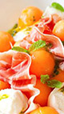
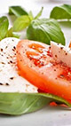
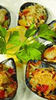
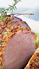
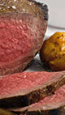
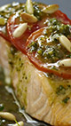
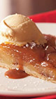
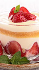

Menu du jour
Aujourd'hui le chef vous propose :
-
Entrées du jour
-

Melon aux jambon
Sur lit de salade verte
-

Tomates mozzarella
Vinaigrette au basilic
-

Moules farcies
Mesclun de jeunes pousses
-
Plats du jour
-

Filet mignon de porc
Sauce caramel et poêlée de légumes
-

Pavé de Rumsteak
Sauce poivre et frites maison
-

Pavé de saumon
Sauce au pesto et fondue de légumes
-
Desserts du jour
-

Tarte tatin
Et boule de glace vanille
-
Fraisier
Au coulis de fruits rouges
-

Tiramisu à la fraise
Arômatisé au kirch